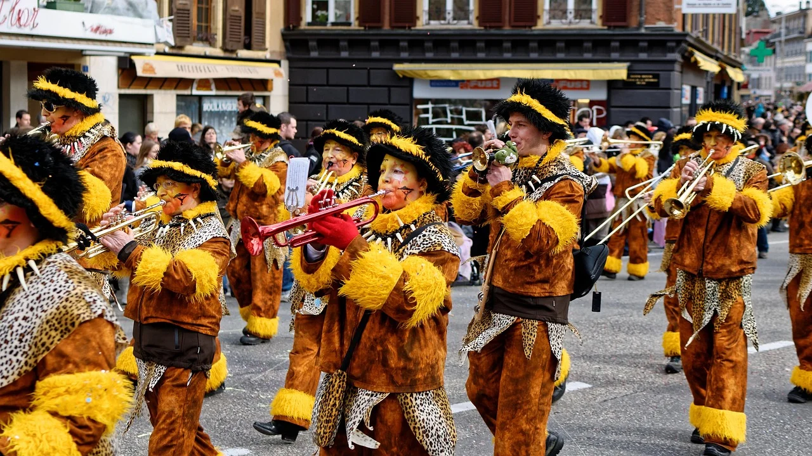
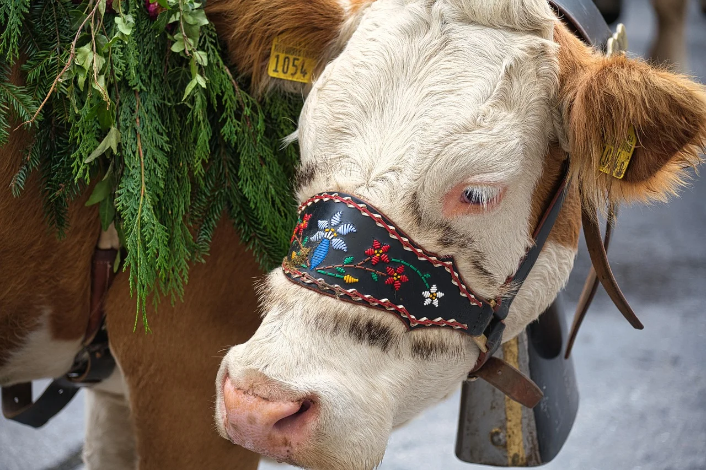
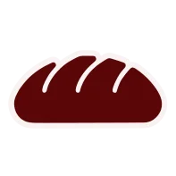
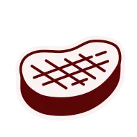

Un País de Diversidad Cultural
Suiza es una nación única donde conviven cuatro idiomas, múltiples tradiciones y una historia que se remonta a más de 700 años. Desde los carnavales alpinos hasta la artesanía tradicional, cada cantón conserva sus costumbres mientras forma parte de una identidad nacional compartida.
Los Cuatro Idiomas Nacionales
La diversidad lingüística es el corazón de la identidad suiza
Alemán
Centro, Este y Norte
Hablado por el 62% de la población. Incluye diversos dialectos suizo-alemanes.
Français
Oeste
Hablado por el 23% de la población. Predominante en Ginebra, Lausana y Neuchâtel.
Italiano
Sur
Hablado por el 8% de la población. Principal idioma del Tesino y partes de Grisones.
Romansh
Sudeste
Hablado por menos del 1% de la población. Idioma antiguo de Grisones, reconocido como oficial.
Tradiciones Alpinas
Costumbres que han perdurado a través de los siglos

Primavera
Carnavales Suizos
El Fasnacht de Basilea y el Carnaval de Lucerna son celebraciones vibrantes con disfraces coloridos, música y desfiles que marcan el inicio de la Cuaresma.
Todo el año
Yodel y Alphorn
El canto yodel y el cuerno alpino son expresiones musicales tradicionales que resuenan en los valles montañosos, utilizados históricamente para comunicarse entre distancias largas.

Otoño
Despido Alpino (Chästeilet)
Ceremonia tradicional donde las vacas regresan de los pastos de montaña, decoradas con flores y campanas, celebrando la finalización del verano alpino.
Gastronomía Suiza
Sabores que definen una nación
Fondue y Raclette
Platos de queso fundido que reúnen a familias y amigos, especialmente durante los meses de invierno en los refugios alpinos.
Chocolate Artesanal
Suiza produce el chocolate más fino del mundo, con tradiciones que datan del siglo XIX y maestros chocolateros en cada ciudad.

Panes Especiales
El Zopf, un pan trenzado tradicional, y el Bärlauchbrot, con ajo silvestre, son solo ejemplos de la rica panadería suiza.

Especialidades Cárnicas
El Bircher Müesli fue inventado en Suiza, mientras que el salami y los embutidos de montaña son delicias tradicionales.
Artesanía Tradicional
El arte hecho a mano que define a Suiza
Relojería de Precisión
La tradición relojera suiza es legendaria, con más de 500 años de perfeccionamiento en la creación de relojes de excepcional calidad.
Talla de Madera
Especialmente en la región de Brienz, los artesanos crean esculturas detalladas, muebles y máscaras tradicionales con técnicas centenarias.
Textiles y Bordados
La tradición del bordado suizo, especialmente en Appenzell, produce telas y prendas de vestir de intrincada belleza y calidad superior.
Arquitectura Alpina
Las casas de madera (chalets) con sus decoraciones florales y balcones de madera son icónicas del paisaje alpino suizo.